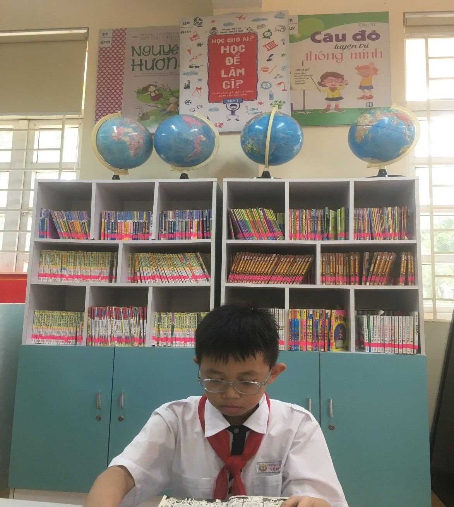
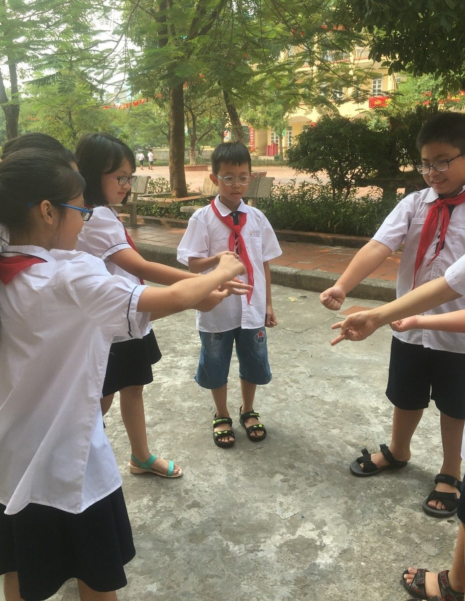

BÀI VIẾT VỀ TẤM GƯƠNG NGƯỜI TỐT – VIỆC TỐT THÁNG 10/2019
BÀI VIẾT
VỀ TẤM GƯƠNG NGƯỜI TỐT – VIỆC TỐT THÁNG 10/2019
EM LƯU HẢI ĐĂNG – HỌC SINH LỚP 5A1
VƯỢT KHÓ VƯƠN LÊN TRONG HỌC TẬP
Khi nhìn vào các hoạt động học tập sôi nổi cũng như những phong trào của các em học sinh trường tiểu học Yên Sở, có lẽ nhiều người sẽ nghĩ rằng các em được sinh ra trong những gia đình có điều kiện, được bố mẹ chăm sóc chu đáo. Nhưng không, ở đó vẫn có những học sinh có những hoàn cảnh khó khăn, thậm chí các em không có cơ hội được bao bọc bởi vòng tay ấm áp của người cha yêu dấu hay người mẹ dịu hiền. Điều đáng khen là dù đứng trước những khó khăn, thiệt thòi như vậy, các em vẫn không chùn bước mà luôn vượt khó vươn lên để đạt được những kết quả cao trong học tập. Một trong những gương điển hình như vậy là em Lưu Hải Đăng - học sinh lớp 5A1 trường tiểu học Yên Sở.
Không may mắn như các bạn cùng trang lứa, Hải Đăng sinh ra và lớn lên trong một gia đình có hoàn cảnh khó khăn. Đầu tháng 12 năm 2018, trong một lần mẹ em đi khám sau những ngày mệt mỏi, sức khỏe sa sút, mẹ em phát bệnh ra căn bệnh ung thư vú. Nhưng nỗi đau chưa dừng lại ở đó, chỉ một tuần sau, người bố của em cũng phát hiện ra căn bệnh ung thư phổi. Chỉ 4 tháng sau, người cha của em đã không thể chống chọi được với bệnh tật và qua đời vào tháng 3 năm 2019. Cùng một lúc cha mất, mẹ mắc bệnh hiểm nghèo, mọi thứ như sụp đổ trước mắt em. Tài sản của gia đình đều dùng vào để chạy chữa bệnh cho cha và mẹ khiến kinh tế gia đình đã khó khăn lại càng trở nên khó khăn, túng quẫn hơn. Ông bà hai bên nội ngoại thì đã già yếu không có điều kiện giúp đỡ về kinh tế.
Từ một cậu bé đang tuổi ăn, tuổi chơi đã phải gánh trên đôi vai nhỏ bé những buồn phiền, lo toan và những nỗi đau khó mà chữa lành. Bây giờ bên cạnh em chỉ còn người mẹ cũng đang mang trong mình căn bệnh đã di căn. Mẹ em phải thường xuyên đến viện để điều trị, sức khỏe yếu nên không thể làm việc kiếm tiền nuôi hai chị em. Người chị cả của em phải bỏ dở việc học để đi làm kiếm tiền lo cho mẹ và em. Tự nhận thức được khó khăn của gia đình, ngoài những giờ học trên lớp, em luôn giúp đỡ gia đình làm việc nhà, kể cả những công việc đôi khi quá sức em, dẫu gia đình khó khăn nhưng thay vì mặc cảm tự ti về bản thân, em càng lấy đó làm động lực phấn đấu vươn lên.

Hải Đăng say mê đọc sách
Với bản tính chăm chỉ và tinh thần vượt khó, sự động viên, giúp đỡ kịp thời của các thầy cô giáo, nhà trường, Hải Đăng không ngừng cố gắng. Hải Đăng luôn là học sinh ngoan ngoãn, lễ phép, thân thiện và khiêm tốn, em luôn vâng lời thầy cô giáo, đoàn kết, chan hòa với bạn bè,… Học giỏi nhưng em luôn gần gũi, chan hòa với các bạn, giúp đỡ các bạn trong học tập. Những bài nào các bạn không hiểu em đều giải thích cặn kẽ từng chi tiết cho các bạn hiểu rõ và nắm vững. Vì vậy, em luôn được các bạn trong lớp rất quý mến, tin tưởng và bầu làm lớp phó phụ trách học tập. Các bạn trong lớp nhận xét “Hải Đăng là một người hiền lành, chăm chỉ đặc biệt là rất hòa đồng hay giúp đỡ mọi người, dù gia đình bạn khó khăn nhưng không vì thế mà bạn bỏ bê việc học hành, trên lớp bạn là học trò ngoan của thầy cô, về nhà em là một người con hiếu thảo của gia đình”.
Tâm sự về những cố gắng của mình, Hải Đăng chia sẻ: “Ngoài thời gian ở trên lớp, về nhà em tranh thủ tự học. Dù ngày hè nóng bức, hay đêm đông giá rét ngày nào em cũng thức khuya và dậy sớm để học bài”. Động lực giúp em cố gắng vươn lên trong học tập chính vì tình yêu thương mẹ, sự quan tâm, động viên của thầy cô, bè bạn. Em mong muốn học giỏi để mẹ vui, để mẹ quên đi bệnh tật mỗi ngày. Hải Đăng nói về ước mơ của em cũng thật giản dị, em mong muốn sau này có một công việc làm ổn định để có tiền chữa bệnh cho mẹ và chia sẻ nỗi vất vả với chị gái.

Hải Đăng vui chơi cùng các bạn
Nhận xét về cậu học trò nghèo học giỏi của mình, cô giáo Lê Thị Thanh Hà - giáo viên chủ nhiệm lớp 5A1 cho biết: “Hải Đăng là học sinh rất ngoan, biết phấn đấu vươn lên trong học tập. Với nghị lực vượt khó và những thành tích tiêu biểu của mình, em xứng đáng là tấm gương sáng cho nhiều học sinh noi theo”.
Tin rằng, bằng nghị lực bền bỉ cùng với sự quan tâm của thầy cô, bạn bè và cộng đồng xã hội, đó sẽ là nền tảng vững chắc giúp Hải Đăng vượt qua khó khăn để thực hiện được ước mơ, hoài bão của mình.